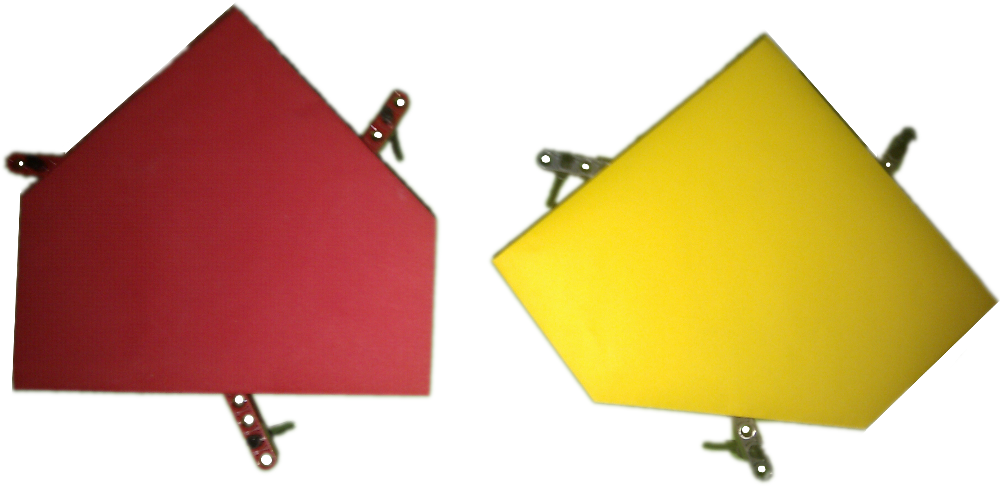
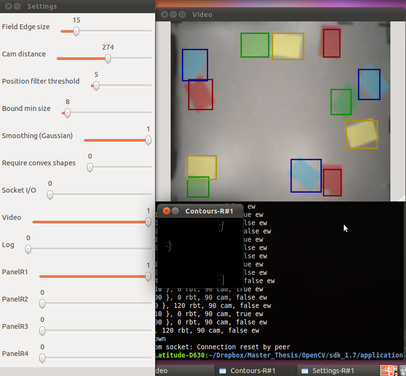
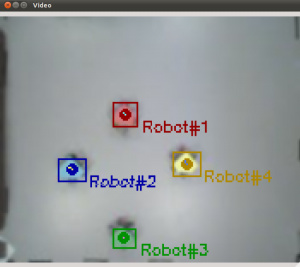

Image analysis: color detection for multiple robots
| August 17, 2011 | Posted by Michael under Drone, Programming, Testing |
Comments off
|
Introduction to our problem
Image analysis is nothing new in our project. We have already performed some by ourselves, using the vertical camera of the drone to track roundels on the ground. While this was a good solution, quite fast to implement and that did not required lots of tuning, it is no longer valid anymore when it comes to detecting more that one robot and differentiating all the units, since we were only considering a circular shape.
We might have tried to identify the robots by the size of their circle marker that could be different according to the id of the robot. It works in a very well-defined environment (steady camera, not too many, too small nor too close roundels); yet the camera is moving, even vertically, so the size of one roundel is never constant (thus making an absolute size detection impossible – i.e. attributing one specific roundel size to a robot’s id) and the resolution of the camera not good enough for that purpose, compared to the precision of the altitude sensor that could have help correct the size estimation depending on the altitude. Finally, some robots may not be in the camera’s field of view from time to time (thus making a relative detection impossible – i.e. guessing a robot’s id by observing that its circle is bigger or smaller than the one of its neighbor). The low resolution of the camera plays an important part in what we can or cannot do: while it is good enough for localization purpose of one point, it is not sufficient enough to tell the difference between different small variations of size for multiple objects that are around 20 centimeters big – besides, the more the robots are on the field, the higher the drone needs to be in the sky, and the harder it gets to achieve such an analysis.
|  |
| Figure 1: Two of the markers installed on top of the omnidirectional robots. They are made of a brightly colored paper sheet folded into a polygon shape, with one angle providing a direction. Each shape is mounted on a LEGO support, of which one can notice the small “arms” going out of the polygons. |
|---|
{kind=link}
So the solution has to be different in terms of the type of object we want to detect. Furthermore this type of object also has to enable a differentiation between many robots (up to ten if we want to be realistic given the system we have). Using the robot itself as an object to be detected is not doable, since all of them have the same shape, and the differences that we could physically build on them would be too minor to be noticed from the sky with our low-resolution camera. Moreover, a robot is a complex object from a camera point of view, and it is harder to detect a complex object with irregularities, holes, reliefs that spawn shadows, etc. than a simpler, flat one. Like we previously did with the roundel, we need a marker for each robot. Figure 1 shows the kind of marker we put on our robots.
We keep using the open source computer vision framework OpenCV to take advantage of its large number of already implemented algorithms and its C++ compatibility.
Solutions for detecting a marker
OpenCV provides developers with hundreds of algorithms that are designed to solve many problems, and often a dozen of implemented techniques might be applied to approach the same problem in different ways. Computer vision being only a fraction of what we learned and used as computer science students and interns, we cannot pretend to have an extensive knowledge of most of the possible solutions to our situation, hence our perhaps limited below suggestions that had to fit within the scope of our project. Our goal is to get a workable result that proves a concept – once this is done, if it only works with a defined set of robots and markers because of our lack of practice with image analysis and OpenCV, then we know that it could be improved to be fully made all-purpose with more time spent on the mathematical side of the algorithms and their implementation.
- Lukas-Kanade feature tracking algorithm1 that exploits the fundamental optical flow constraint equation. This methods tracks features points as they move from frame to frame. It starts detecting a group of features points in an initial frame and then tries to find them in the next frame, and keep doing so while updating from time to time the feature points. While this may be a valid solution with a static camera where only the robots are moving, it will surely be harder if not impracticable with a moving camera and moving robots.
- Mixture of Gaussian method2. It is basically an algorithm that extracts foreground objects in a scene while also coping with the problem of a moving background object (like tree leaves) or a glaring effect, thanks to sophisticated additions (e.g. the running variance is also considered on top of the running average for a model – so more data are kept and analyzed). This might be used in our case, even with a moving camera, but this would means that we make sure to keep flying and moving over a regular, flat, featureless and uni-color/pattern ground.
- Template matching method. It enables the detection of a specific pattern or part of a bigger image by looking for matches between the analyzed image and another, smaller image – the template, that contains the object we are trying to find. It does so by sliding the template over the image, going from the top left to the bottom right corner. The drawback of this solution is that is does not automatically take possible rotations of the object to match into account, nor does it consider the scaling of the object that changes depending on the altitude of the camera. Implementing those additional treatments would be possible but may be tedious and likely hardly efficient in terms of complexity (a naive algorithm would have to consider all the possible orientation over 360 degrees, on top of different template sizes…). Yet, if done correctly and providing a well thought template, this may become a really elegant solution, because it would rely on a bare minimum of external environmental factors.
- Color detection and tracking looks for specific colors in an image. This methods removes all the colors that are not wanted, so as to only keep the color we need to locate, by applying different color filters on each image. This is frame-independent, i.e. it does not require to keep a trace in memory of what happened before, which is a positive aspect since frames may have almost nothing in common depending on the movements of the drone. This is however a surrounding-light sensitive solution, which means that results will vary depending on the daylight and lights that are turned on. So tuning might be often required before a new experiment.
Chosen technique
We have chosen tracking by color object detection, since this is a solution we knew could be implemented quickly with fair results. It may not be the best because of its important drawbacks, but our setup is such that those are mostly insignificant: we work in an office where light conditions greatly depend on ceiling lights, so we can keep a nearly constant lighting environment at all time. Besides, we do not need to track more than a few couples of robots, which mean that we can choose quite easily colors sharply contrasting with each other. Yet we are aware that this is no sustainable solution if we were to implement it on a greater scale in a different environment like outdoors, but image analysis is only one of our many concerns in this project, not our focus – so we could not afford to spend six months working on this topic alone.
On top of that, we also learnt from other fellow students from Aarhus University, who faced a similar problem with an “eye-in-the-sky” static camera tracking two ground robots in real-time. They investigated many possible solutions and eventually disregarded all of them to choose the color detection. Yet they paid close attention to some of them, by even selecting first the Haar Classifier Cascades, that they did implement. However, this is an algorithm based on Machine Learning that requires a lot of “training” time, and performed badly in their setup, with unworkable results. Since our working environment is almost the same as theirs, with the same kind of hardware that is visually complex (LEGO studs are seen during the training of the machine with clear, clean pictures, but the video stream is much more noisy, and in our case even distorted by the inclination of the drone – so the same pattern on a picture may not be recognized in a video), and with the same software library OpenCV, it made a lot of sense to follow their track and try to build on what has been already done. All the details are available in their labreport3.
This academic work, a recipe book for OpenCV4 and lessons from our former professor of image analysis5 provided us with plenty of inspiring ideas and practical ways to implement them.
Color object tracking
Method and implementation
As an aside, please keep in mind that our following explanation may be best understood by looking into our commented source code at the same time, available in our Link & Downloads section. The most relevant file for the problem we analyze here is ColorMatcher.cpp (in folder drone_app_code_sdk_1.7/application/Source/ColorMatching).
Tracking a given object usually requires to proceed in two major distinct steps:
- Identify the object, by producing a binary image showing where certain objects of interest could be located. This can for instance be done by histogram back projection or by motion analysis.
- Extract the objects contained in this binary collection, i.e. extract the connected components (shapes made of a set of connected pixels in a binary image).
Then it is a good practice habit to display some graphical information on the video stream so the user may visualize how the algorithm performs.
Analyzing a video signal is pretty much similar to analyzing a single picture. Video signals are made of a sequence of images called frames, that are taken at a regular pace, the frame rate. Once the individual frames of a video have been extracted, methods to analyze them are no different from those applied to pictures, and the results are the same, as long as we do not overdo too much heavy processing to keep up with the frame rate.
So for the remaining of our explanation, we do as though we deal with a single frame, given that we then repeat the same process forever (as long as the drone is running). Note that each frame is temporarily copied into another memory location: the copy will be analyzed by our algorithm, while the original will have some graphical information drawn on top of it every time we go through one loop for one color and we identify a color. If this is not done, then the drawing interferes with the detection algorithm, since it is then part of the frame. The original frame is shown to the user, while the copy is deleted once all the color have been tracked on the current frame.
Identifying the colors
We try here to track the markers presented on Figure 1. Since we are only dealing with color matching in a first time, we pay no attention on any other characteristic of the marker (neither the shape nor the orientation are relevant).
Basically, when the program is launched, it is initialized with some static configuration that provides the parameters needed to identify each robot. To keep the matter simple, we therefore have one robot associated with one range of color values, in a one to one relationship. During our further explanations, we will deal with only one robot/color, since the process is repeated in the same way for every other color (the difference being the values of the parameters passed to our function).
For one color, we create a temporary color mask that is going to be our binary image required for the next step. It first starts as an empty data structure of the same dimension as the original frame.
IplImage* colorMask = cvCreateImage(
cvSize(
frame->width,
frame->height
),
8, // image type (8 bits image)
1 // one single channel
);
Then we apply the following method on our frame:
cvInRangeS(frameCopy,
cvScalar(robot->B_val_min, robot->R_val_min, robot->G_val_min),
cvScalar(robot->B_val_max, robot->R_val_max, robot->G_val_max),
colorMask
);
cvInRangeS extracts all the pixels that are in the color range defined by the second and third parameters [lower and upper bound of the interval] and gives them a binary value of 1 that will be stored in the colorMask matrix, while all the other filtered-out pixel get a 0 value. A color is defined here by its Red, Green, Blue (RGB) composition, thus we need to specify three value for each bound of the interval. Therefore, one can assert that a robot is completely defined by 6 values.
Extracting the objects
From now on we have our binary data structure filled, which we can use. Another temporary data structure is needed, that is going to hold a vector of contours. Initialization is done as follows:
CvMemStorage* storage = cvCreateMemStorage();
OpenCV offers a simple function to extract the contours of the connected components of an image:
int numberOfContours = cvFindContours(colorMask, // our binary image from step 1.
storage, // a vector of contours
&first_contour // a pointer to the first contour found
);
The input is our binary image previously obtained. The output is a vector of contours, with each contour being represented by a vector of CvPoint. The extraction is performed by an algorithm that systematically scans the image until a component is found. Then, it follows its contour from this starting point while marking the pixel on its border. Once the contour is fully found, the scanning resumes at the last position until it finds a new component.
Then, we filter out some of the components we are sure we want to be eliminated, using some prior knowledge about the expected size of the object of interest. We therefore discard all the components whose bounding box is smaller than a defined size. A bounding box is the most compact way to represent a component in an image, defined as the upright rectangle of minimum size that contains the shape entirely. It cannot provide more information than the location of the object and an approximation of its size. That is the easiest structure to use for us, and is created in our code like this:
cvRect bound = cvBoundingRect(storage[0], 0)
However, filtering all the small bounding boxes revealed to be insufficient to get eventually one unique box that could be identified as the wanted color/robot, because of some unexpected light noise that might appear on one frame or another. Hence our decision to only keep the biggest one (the noise is usually not covering a surface bigger than the robot itself).
Displaying the objects
Finally, we draw all the bounding boxes we found on our original frame, except for those that are smaller than our threshold, as it displayed on Figure 2. Then we add a marker (a circle and a tag name) on what we consider to be the actual robot, that is, the biggest rectangle (cf. video 1 or Figure 3 for an illustration).
Once our analyze is done for one frame and one color, we obviously do not forget to reset and release the temporarily allocated memory chunk to avoid a memory overflow that can happen really quickly when it comes to deal with a video signal:
cvClearMemStorage(storage); cvReleaseMemStorage(&storage); first_contour = NULL; cvReleaseImage(&colorMask);
We also draw a direction vector that make averages on the last ten registered positions for each robot, so we can get a new information on the overall direction of a unit.
Obviously, while drawing our bounding boxes, we also update the corresponding robot structure with its newly found coordinates. We convert the matrix coordinates into real measurements by applying the same calculations that we already did with the drone and one roundel6 (it basically consists in multiplying our value by a MAPPING_SCALE parameter that depends on the altitude of the camera and its Field Of View angle). Automatically, the new position of the robot is sent to the server that manages the flock.
|  |
| Figure 2: Detection of multiple objects at the same time. This is our main interface that enables us to test and see what happens in real-time, by providing tools to tune parameters “on the go”. The left window is the user input interface, the top right window displays the video with a matching colors overlay, and the small bottom right window currently displays the extracted contours corresponding to our red color. |
|---|
{kind=link}
The Graphical User Interface provides the user with some liberty in adjusting the parameters in real-time:
- Field edge size is the size of the virtual border all-around the image that triggers a specific signal once a robot is in its boundaries. This is later used by the server and the leader that will try to prevent robots to escape the field of view as often as possible.
- Cam distance is the distance from the camera to the ground. This is actually only used with a webcam on the ceiling (see below), and is updated automatically when the drone is used (thanks to its sensors).
- Position filter threshold is the minimum distance that has to be between two components before considering them as two different objects.
- Bound min size is the minimum size of one side of a bounding box so that its inner component is considered as a potential robot.
- Smoothing (Gaussian) applies a filter that blurs the image. This is a convenient way of getting rid of noise inside frames that has otherwise a tendency to produce lots of small, scarce components. It is thus practically always kept active.
- Require convex shapes can be activated to disregards all the components that are not convex. Given the lack of absolute precision in the detection, it is rare that components are always perfectly enclosed object, so this is probably too selective a parameter.
- Socket I/O enables or disables communication with a server. (more about that feature in our project’s report)
- Video opens a window that displays the video signal in real-time, with the graphical overlay.
- Log is used for debugging: if activated, it prints debug and information messages in real-time into the console.
- PanelR# opens or closes the settings window for a given robot. This new panel allows the user to change separately one of the 6 color parameters (i.e. the RGB interval boundaries), in real-time. It also enables another video view where is solely shown the computed contours (the
storagevector) for the associated color.
Experiments
One steady webcam setup
In order to not over complicate the testing of this part of our project, we decided to first test our recognition algorithm with an USB webcam attached to the ceiling and facing down toward our testing field, before connecting it to our drone and dealing with the hassle of flying it altogether. We also ran a simple server locally which task was merely to print out the messages -containing the robots coordinates- sent by our detection class.
This webcam has a higher resolution of 640*480 pixels than the vertical one embedded in the drone (176 * 144 pixels). This entails a higher accuracy in what was observed, but also a major slowdown in the processing time. Actually, the laptop we use for this purpose is getting old and is not able in itself to just correctly display the video stream at a good frame rate and lag-free. While this was not an issue to test the basic mechanics of our algorithm, and to see that the color detection was efficient enough for our purpose, it quickly became a problem when we introduced communication with the robots, since they were not able to react to their current state, and rather moved accordingly to already obsolete results.
That is the reason why we later thought about an intermediate solution that consists in hanging the drone on the ceiling by the means of strings, and then establish a WiFi connection with it without starting its motors, in order to get its video signal. This enabled us to tune our algorithm even better and approach our final system step by step. Besides, what we lost in resolution was gained in terms of frame rate, computing time and greater field of view (64 degrees instead of 52 degrees, which is a nice improvement given our rather low ceiling).
We therefore created a class that can be instantiated for both configurations, depending on the available setup and current needs. This ColorMatcher class handle then all the color detection algorithm, server communication and Graphical User Interface (GUI) by itself. The following piece of code is enough to launch all the threads that manage those tasks:
ColorMatcher* colorMatcher = new ColorMatcher(true // use the webcam rather than the drone's camera
true // start by displaying the video signal (GUI adjustable)
IplImage* frame;
while ( (frame = colorMatcher->getCurrentFrame()) != NULL)
{
colorMatcher->analyzeFrame(frame);
}
One robot
Starting with one robot, i.e. one color, was a good way to learn how to tune our parameters. A good start is to identify the RGB code of the tag we consider by comparing it to samples in an online database if necessary, then to create a first interval of minimum and maximum boundaries by substracting or adding a constant to those RGB values. Then, watching the color mask evolving in real-time on the screen enables a quick and efficient tuning, usually by tweaking only one or two more parameters, using sliders of the GUI.
Results went better than expected because of the really good detection speed and the fairly stable performances we observed (cf. Video 1). Surely, if we were to turn off at least one light in the room would the results be different with plenty of noise and false positives. Light sensitivity is the obvious drawback of this system.
|
Video 1: The robot’s behavior has no special meaning – it’s merely a test with a still webcam ofgood resolution that is used to detect specific colors on the ground. The control window on the right (mostly black) shows what happens on the algorithm side when we want to detect the red color. Coordinates and values returned by the algorithm (for further used by the ground robots) are displayed in the console on the bottom right. |
|---|
N robots
Going from one robot to n robots has being made an easy task in our class. At any time, one just needs to add the following line into the program to tell it that it should now also watch for a new range of color and handle a new robot.
colorMatcher->addRobot(B_val_min, G_val_min, R_val_min, B_val_max, G_val_max, R_val_max);
The more the robots we have, the harder it is to find colors that can be easily distinguished if we want to deal with slight lighting variations. Still, we did not have any issue with four colors (the highest number we could test here, due to the material limitation we have with the number of robots we could possibly build), as it is shown in Figure 3.
The complexity of our algorithm being nothing more than linear (O(n)) in terms of the number of robots and not quadratic or worse, we did not expect, nor did we observe, a longer computational time and a performance loss. Actually, the algorithm keeps being executed faster than the frame rate. Video 2 is here to illustrate the performance of our color detection program for multiple robots.
|  | |
| Figure 3: Detection of four objects at the same time. Notice how the resolution has changed compared to video 1, due to a switch from a webcam to the drone’s camera. This is also the best field of view we can hope to have in our testing room: the drone is about 270 cm high, providing a FOV of around 180*220 cm². | Video 2: Detection of four objects in real-time. The color location is quite steady on a whole run. Still, this video illustrates some consequences of non precise tuning, where Robot#4 (yellow) is once mistaken for Robot#1 (red), which can lead to wrong behaviors.Observe also (solved) issues with green detection: some parts of the floor are sometimes seen as green, but since they are always small in size, the algorithm never confuses them for Robot#3 – as long as it is on the field. |
|---|
{kind=link}
Experimenting with different surroundings
We have tried our whole system with the drone’s camera and four robots in another environment (our LEGOlab, Zuze building, in Aarhus), where the place is well-lit by the daylight and the floor is mostly a blue carpet. Results were poor compared to what we get in our own office, that consists in a light gray floor and is mostly influenced by indoors lights. Basically, the blue carpet triggered a bad detection quality by greatly decreasing the contrast with our own markers. Unsurprisingly, the red one was still quite well detected, while all the other colors appeared almost white on the screen. That is due to the camera that overcompensates the relative prevailing darkness of the blue carpet by making anything else much brighter in contrast, to the point where it is hard to tell the difference between our already bright, blue, green and yellow colors. It was really obvious once we get a white shirt of one of us appearing in the field of view: after a couple of seconds of adaptation, the detection was back to being nearly perfect again, whereas the blue carpet was still prevalent. This is explained by the fact that this shirt provided a new element of sharp contrast with the remaining of the image, which was then compensated the other way around by the camera. The ambient bright daylight was also not here to help it, because of the somewhat reflective surface of our tags and the noise generated on the video signal.
Results with the drone
Tests
Dealing with a moving drone is supposed to complicate the detection for the worse. Surprisingly, once the color parameters are tuned, the detection keeps being smooth – and nothing is slow down (neither the tracking algorithm nor the drone’s control algorithm).
The increase or decrease of distance from the camera to the field did not have any noticeable effect on our detection, as long as the drone does not go beyond an altitude of around four meters, in which case it would require bigger tags (or a higher-resolution camera). Besides, quick movements and large inclinations of the drone were not affecting our tracking. We also feared that the shadow cast by the drone itself on the ground would cause visible issues, but none was to be reported. Coordinates sent were still consistent in the own relative camera coordinates system, which helped efficiently the robots to position themselves on the field (more on this topic in another article, and lots of example videos of the whole system in our Youtube channel).
Improvements
One improvement that may be however considered to add more flexibility to the use of our drone, by making it less light-dependent, may lie in the polygonal approximation of a component’s contour, instead of its rough bounding box. This way, we could detect shapes instead of colors -like one regular polygon for one robot-, while still keeping almost all our algorithm. Color detection would still be used but with a much broader and permissive interval, insofar as we would not have to differentiate the robot’s colors between each other, and contour detection would also be applied. We would then need to change a few lines of code while changing the bounding rectangles to a creation of a new polygon, which would be close to this:
std::vector poly; // the polygon we want to create from the contour
cvApproxPolyDP(cv::Mat(storage[0]),
poly,
5, // accuracy of the approximation
true // yes it is a closed shape
);
And after that, we could identify the polygon by counting the number of its sides. NB: the convex hull is another form of polygonal approximation that may also be worth considering.
We have already tried the component detection with a broader color interval, and it revealed to be really efficient in the task of differentiating the robots from the other elements on the ground, most likely because of the bright colors that were used as markers. We however lacked time to implement the remaining of the polygon detection (and it was not also absolutely necessary since we achieved our main goal without it), but we believe it to be a sustainable solution, even though we are still not fully assured of its success, because of the low resolution of the camera that would certainly make this impossible if the objects were too small.
A possible alternative would be a mix between color detection and template matching, by tracking the robot using template matching, Kalman filtering and color-histogram back-projection. Templates of robots would still be extracted from our color mask using connected component extraction. New locations would be predicted by a Kalman filter. The template matching would be a nice added feature to our algorithm, since it would then provide it with more flexibility and a self calibrating process. This method was used to track soccer players and a ball in a football game, that can be applied in real-time with a good efficiency7. This is a situation quite similar to our issue, where we need to keep track of different elements belonging to the same team and moving on a two-dimensional field.
References
- Article by B. Lucas and T. Kanade, an iterative image registration technique with an application to stereo vision in Int. Joint Conference in Artificial Intelligence, pp. 674-680, 1981, describing the original feature point tracking algorithm. [↩]
- A complete description of the Mixture of Gaussian algorithm can be found in the article by C. Stauffer and W.E.L. Grimson, Adaptive background mixture models for real-time tracking, in Conf. on Computer Vision and Pattern Recognition, 1999. [↩]
- Hammer Slammer LEGO Game – Harald Andertun, Tom Oersnes Thorgaard, Mark Surrow: http://legologbook.blogspot.com/ [↩]
- OpenCV 2 Computer Vision Application Programming Cookbook (Paperback) by Robert Laganiere, Packt Publishing Limited – ISBN 13: 9781849513241 ISBN 10: 1849513244 [↩]
- David Roussel, research professor working at the IBISC laboratory (http://www.lami.univ-evry.fr/) [↩]
- Tracking algorithm: considering the inclination of the drone, Situation Modeling: http://www.ludep.com/tracking-algorithm-considering-the-inclination-of-the-drone [↩]
- Sunghoon Choi, Yongduek Seo, Hyunwoo Kim, Ki-Sang Hong, Where are the ball and players?: Soccer game analysis with color-based tracking and image mosaik [↩]